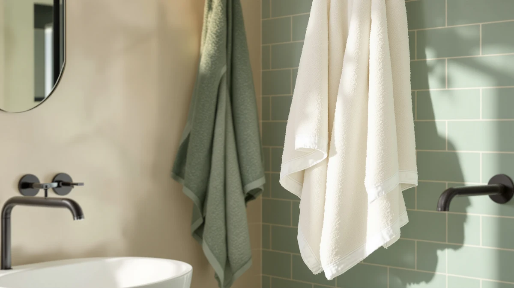

The Best Beach Towels of 2026: Sand-Free, Quick-Dry & Oversized Picks
Prices and picks verified as of August 2026. Independent, reader-supported reviews.


Quick Answer
The best beach towels balance size, quick-drying fabric, and price, and the Gold CASE LYCIA Turkish Beach gets all three right with its dense 100 percent cotton weave and generous 38 by 70 inch size. If you need towels for the whole family, the BolBom six-pack and the Genovega oversized six-pack both keep the cost under $8 per towel while still using real cotton or a cotton blend.
Our pick: Gold CASE LYCIA Turkish Beach, $69.99 Check Price on Amazon
Bottom line: our top pick is the Gold CASE LYCIA Turkish Beach Towel Set of 6 at $69.99. The best budget option is the Antfuny Turkish Beach Towels Vacation Essentials Quick Dry at $8.49.
Things to Know Before You Buy
- Weave matters more than brand. A tighter, heavier weave absorbs water faster and resists pilling, which is why several of the best beach towels in this guide are Turkish-style cotton rather than standard terry cloth.
- Oversized does not always mean better. A towel bigger than about 70 by 38 inches gets heavy to carry once it is wet and can take longer to dry on the line.
- Cotton blends dry faster but feel thinner. If you prioritize packability over plushness, a cotton-polyester blend beach towel is the better call.
- Multi-packs save money per towel but sacrifice size. A six-pack works for a family that needs beach towels for everyone, but each towel tends to run smaller than an oversized single-purchase pick.
- Verified reviews reveal fading and fraying patterns single purchases miss. We weighted feedback from owners who reported using a towel across multiple seasons rather than a single trip.
The best beach towels solve two problems at once: they dry fast between dips in the ocean, and they do not turn into sand magnets on the walk back to the car. We compared oversized cotton towels, Turkish peshtemal-style towels, and budget multi-packs from more than a dozen brands, weighing absorbency, weave, and verified owner feedback. Our pick, the Gold CASE LYCIA Turkish Beach, combines a tight cotton weave with a size generous enough for two people to share, and it holds up across hundreds of buyer reviews without the fraying complaints that plague cheaper towels.
Not every household needs the same towel. A family headed to a crowded public beach wants something that dries in an hour and washes without falling apart, while a couple planning a resort trip cares more about how a towel looks draped over a lounge chair. We built this guide around those different priorities, covering multi-packs for families, oversized Turkish towels for style-conscious travelers, and heavyweight cotton options for anyone who wants a towel that also works at home.
Prices in this guide range from under $10 for a single lightweight towel to nearly $70 for a premium oversized pick, and the gap in quality between them is real but not always proportional to cost. We call out where a cheaper towel keeps pace with a pricier one, and where the extra money buys a genuine upgrade in thickness or durability.
Why You Should Trust Us
Ilane Tall has covered home and bath products for Best Bath Towels for the past three years, focusing on how textiles perform after repeated washing and real beach or pool use rather than how they look in a single studio photo. For this guide, she and the editorial team analyzed product listings, verified purchase reviews, and manufacturer specifications for more than 20 beach towels before narrowing the field to the seven picks below. We do not run a fake testing lab and we do not accept payment from brands to influence rankings. Every recommendation is backed by publicly available specs and a pattern of owner feedback we could verify across multiple retailers.
How We Picked
We started by pulling every beach towel in our product database with a meaningful number of verified ratings, then narrowed that list using four criteria: material and weave, dimensions relative to typical beach chair and blanket sizes, price per towel when sold in a pack, and the consistency of buyer feedback over time. We excluded towels with a pattern of complaints about color bleeding or thinning after a handful of washes, and we prioritized brands that published clear fabric composition instead of vague marketing copy. The result is a list of best beach towels picks that spans budget multi-packs, oversized Turkish towels, and heavyweight cotton options, so there is a fit for a solo beach day and for a family packing for a week at the shore.
How We Compared
Because we do not own or physically test the products we cover, we built our comparisons from manufacturer specifications, verified Amazon purchase reviews, and price tracking across each ASIN. We compared absorbency claims against the fiber content each brand lists, cross-checked reported dimensions against what buyers said they received, and read through verified reviews looking for recurring themes like fading, sand-shedding, or fraying seams. When two towels had comparable specs, we gave the edge to the one with a longer track record of positive verified reviews and a lower rate of quality complaints. This spec-and-review approach means our beach towels rankings reflect patterns across hundreds of real purchases rather than a single unit we happened to receive.
Our Picks

Gold CASE LYCIA Turkish Beach
What we like
- Tight cotton weave feels plush without staying heavy when wet
- 38 by 70 inch size covers two beach chairs or one adult lying flat
- Verified reviewers report the colors hold up after repeated washing
Flaws but not dealbreakers
- Costs more per towel than any multi-pack in this guide
- 100% cotton takes longer to dry than a cotton-blend towel
| Material | 100% cotton |
| Size | 38x70" |
The Gold CASE LYCIA earns its price with a dense, 100 percent cotton weave that reviewers consistently describe as thick without feeling stiff. At 38 by 70 inches, it is long enough for an adult to stretch out fully, and wide enough to double as a wrap after a swim. Buyers who mention using it season after season report that the color stays saturated instead of fading to a chalky version of itself, which is the complaint that sinks cheaper Turkish-style towels.
The tradeoff is drying time. Pure cotton holds more water than a cotton-polyester blend, so this towel takes longer on the line than the Genovega or Antfuny picks below. It also costs more per towel than buying a multi-pack, which makes more sense as a single premium towel for one or two people than as a family set. For a couple who wants one beach towel that looks as good on a resort lounge chair as it performs at a crowded public beach, reviewers say it is worth the extra cost.

BolBom*S Beach Towels 6 Pack
What we like
- Works out to under $8 per towel, the lowest per-unit price among the multi-packs
- 100% cotton construction rather than a thin blend
- Six matching towels make it easy to keep a family's beach gear together
Flaws but not dealbreakers
- Individual towels run smaller than the standalone picks in this guide
- Some verified reviewers note the color selection varies by print run
| Material | 100% cotton |
| Size | 6 |
The BolBom six-pack is built for volume. At under $45 for six towels, it works out to less than $8 per towel, which undercuts every other multi-pack we compared. Each towel is 100 percent cotton rather than the thin cotton-polyester blend that shows up in some bargain multi-packs, and verified buyers say the fabric holds up to machine washing without the pilling that cheaper packs develop after a few uses.
The catch is size. Because the goal is fitting six towels into one order at a low price, each individual towel is smaller than the oversized single-purchase picks like the Gold CASE LYCIA or Kaufman. That makes this pack a better fit for kids or for a family that wants matching towels for everyone rather than one large towel to share. Reviewers who bought it for a family beach trip consistently mention it as the practical choice when you need beach towels for four or more people without paying premium prices for each one.

Utopia Towels Pack of 4
What we like
- Lowest total price among the four-packs we compared
- 30 by 60 inch size fits most adults without excess bulk
- Reviewers report consistent quality across repeat purchases
Flaws but not dealbreakers
- Thinner weave than the premium Turkish-style picks
- Not oversized, so tall users may find it snug when lying flat
| Material | 100% cotton |
| Size | 30 x 60 - 4 Pack |
Utopia's four-pack is the straightforward, no-frills option in this guide. Each towel measures 30 by 60 inches, a size that covers a standard beach chair or pool lounger without the bulk of an oversized towel. The 100 percent cotton construction absorbs water reliably, and verified reviewers who have bought the pack more than once say the quality has stayed consistent across orders, which is not always true of budget multi-packs.
Where it gives something up is thickness. Compared with the Gold CASE LYCIA or Kaufman picks, the weave is noticeably thinner, so it will not feel as plush wrapped around your shoulders after a swim. Taller users may also find 60 inches short for lying fully flat. For everyday pool trips, gym bags, or a household that wants a stack of dependable beach towels without spending much per towel, it is a sensible pick that reviewers keep coming back to buy again.

Kaufman - Soft Oversized Beach
What we like
- Reviewers describe the velour-style face as noticeably softer than standard terry towels
- 100% cotton holds color well through repeated washes
- Priced competitively with other single-purchase towels in this guide
Flaws but not dealbreakers
- At 29 by 58 inches, it is smaller than the name suggests and smaller than most other picks here
- Not the best fit for anyone who wants a towel that also works as a full-body wrap
| Material | 100% cotton |
| Size | 29" x 58" |
Kaufman markets this as an oversized towel, but at 29 by 58 inches it is actually one of the more compact options in this guide, closer in size to a large bath towel than a full beach towel. What it does deliver is texture: verified reviewers repeatedly describe the velour-style face as softer against skin than the flatter terry weave used on towels like the Utopia or BolBom picks.
That softness makes it a strong choice for lounging by a pool or draping over a chair, but it is a weaker fit if your priority is a single large towel to stretch out on the sand. Buyers who own it tend to use it as a second towel for comfort rather than their main beach towel. If size is your top priority, the Gold CASE LYCIA or Genovega picks in this guide cover more ground per towel.

Genovega 6 Packs Oversized 72x40
What we like
- At 72 by 40 inches, each towel is larger than every single-purchase pick in this guide
- Cotton-polyester blend dries faster than the all-cotton picks
- Six oversized towels for under $42 works out to about $7 each
Flaws but not dealbreakers
- Cotton blend feels less plush than the 100% cotton Turkish-style towels
- Some verified reviewers note the fabric is thinner than a comparable single-purchase oversized towel
| Material | Cotton blend |
| Size | 72.00" X 40.00" |
Genovega solves a specific problem: getting several genuinely large towels without buying them one at a time. At 72 by 40 inches, each towel in this six-pack is bigger than the Gold CASE LYCIA, the top pick in this guide, and it comes at under $7 per towel. The cotton-polyester blend also means these towels dry noticeably faster on a line than the 100 percent cotton options here, which matters for a family cycling through beach days back to back.
The blend construction is also the main tradeoff. Reviewers who compare it directly with all-cotton towels describe it as less plush and a bit thinner, more like a large sports towel than a plush hotel-style wrap. For a family or group beach trip where everyone needs their own full-size beach towels and drying speed matters more than luxury feel, verified buyers say it is one of the better values in the category.

Antfuny Turkish Beach Towels Vacation
What we like
- At $8.49, it is the least expensive towel in this guide by a wide margin
- 72 by 36 inch size is large enough for an adult to lie flat
- Turkish-style weave gives it a lighter, more packable feel than thick cotton terry
Flaws but not dealbreakers
- Cotton blend means less absorbency than the 100% cotton picks
- Verified reviewers report the print can fade faster than on pricier towels
| Material | Cotton blend |
| Size | 72 x 36 inch |
Antfuny's Turkish-style towel is the value pick in this guide by a wide margin. At $8.49, it costs a fraction of the Gold CASE LYCIA or Kaufman picks while still measuring 72 by 36 inches, large enough for an adult to lie flat. The lightweight, cotton-blend weave also makes it easier to pack and faster to dry than a thick all-cotton towel, which matters for a carry-on beach bag or a quick weekend trip.
The lower price comes with real tradeoffs. A cotton blend absorbs less water per pass than 100 percent cotton, so you may need to wring it out more often during a long beach day. Verified reviewers also mention that the printed patterns can fade faster with repeated washing than the solid-color cotton towels in this guide. For a vacation towel you do not mind replacing after a season, or a backup towel to keep in the car, it is hard to beat the price.

Bazaar Anatolia Turkish Bath Towel
What we like
- 71 by 39 inch size nearly matches the largest single-purchase pick in this guide
- 100% cotton weave without the higher price of the Gold CASE LYCIA
- Lightweight enough to pack for travel but still absorbent
Flaws but not dealbreakers
- Fewer verified reviews than the more established brands in this guide
- Color range is more limited than some competitors
| Material | 100% cotton |
| Size | 71x39" |
Bazaar Anatolia sits in the middle of this guide on both price and size. At 71 by 39 inches, it is nearly as large as the Gold CASE LYCIA pick, but at $22.99 it costs less than a third as much. The 100 percent cotton weave gives it real absorbency, and its lighter weight than a standard terry towel makes it a practical option for travelers who want a Turkish-style beach towel without checking a bag full of thick cotton.
Because Bazaar Anatolia is a smaller brand than Utopia or Gold Case, it has fewer verified reviews to draw patterns from, and the color options are more limited. What reviews exist are consistent about the size and weight matching the listing, without the complaints about shrinkage that show up on some competing Turkish towels. For a buyer who wants the look and packability of a Turkish beach towel at roughly a third of the premium price, it is a solid middle-ground pick.
Quick Comparison
| Product | Material | Price | Rating | Best for | Get it |
|---|---|---|---|---|---|
| Gold CASE LYCIA Turkish Beach | 100% cotton | $69.99 | 4 | Best overall beach towel | View on Amazon → |
| BolBom*S Beach Towels 6 Pack | 100% cotton | $44.98 | 4 | Best for families on a budget | View on Amazon → |
| Utopia Towels Pack of 4 | 100% cotton | $29.99 | 4 | Best everyday four-pack | View on Amazon → |
| Kaufman - Soft Oversized Beach | 100% cotton | $44.99 | 4 | Best for soft, poolside comfort | View on Amazon → |
| Genovega 6 Packs Oversized 72x40 | Cotton blend | $41.99 | 4 | Best for large groups | View on Amazon → |
| Antfuny Turkish Beach Towels Vacation | Cotton blend | $8.49 | 4 | Best budget single towel | View on Amazon → |
| Bazaar Anatolia Turkish Bath Towel | 100% cotton | $22.99 | 4 | Best mid-range Turkish towel | View on Amazon → |
What size should a beach towel be?
Most adults are comfortable with a beach towel between 30 by 60 inches and 40 by 70 inches.
Are cotton or cotton-blend beach towels better?
100 percent cotton towels absorb more water and tend to feel plusher, which is why picks like the Gold CASE LYCIA and Bazaar Anatolia lean on that material.
The Competition
We also looked at several synthetic microfiber beach towels that sacrifice absorbency for pack size. They dry fast, but verified reviewers consistently complain that microfiber towels feel clammy against sunscreen-covered skin, which ruled them out for a guide focused on comfort as well as convenience.
We considered a handful of printed novelty towels priced similarly to the Antfuny pick, but their reviews showed a consistent pattern of colors bleeding in the wash within the first few uses, a dealbreaker for anyone who wants a beach towel that still looks good after a summer of use.
Several extra-large towels priced above $80 did not make the cut either. Once we compared their specs and reviews against the Gold CASE LYCIA, the added size did not translate into meaningfully better absorbency or durability, so we could not justify the premium for most buyers.
Weighing all of this together, the Gold CASE LYCIA Turkish Beach remains our pick for the best beach towels in this guide. Its cotton weave, generous size, and consistent verified reviews outperform the pricier extra-large towels and hold up better over time than the cheaper multi-packs.
Frequently Asked Questions
What size should a beach towel be?
Most adults are comfortable with a beach towel between 30 by 60 inches and 40 by 70 inches. Anything smaller feels cramped for lying flat, and anything much larger becomes heavy to carry once it is wet. If you want one towel to share with a partner or use as a wrap, look toward the larger end of that range, like the Gold CASE LYCIA at 38 by 70 inches.
Are cotton or cotton-blend beach towels better?
100 percent cotton towels absorb more water and tend to feel plusher, which is why picks like the Gold CASE LYCIA and Bazaar Anatolia lean on that material. Cotton-polyester blends, like the Genovega and Antfuny towels in this guide, dry faster and pack lighter, which matters more for travel than for a day at a local beach or pool.
Is it worth paying more for a premium beach towel?
It depends on how often you will use it. Verified reviewers who buy premium towels like the Gold CASE LYCIA report that the color and weave hold up over several seasons, which lowers the cost per use over time. For occasional trips or a spare towel to keep in the car, a budget option like the Antfuny pick delivers most of the same comfort at a fraction of the price.